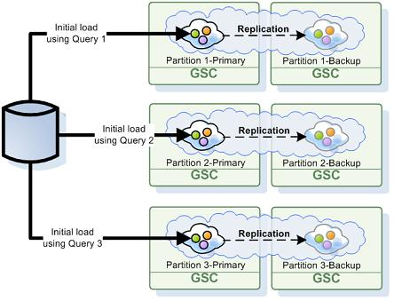

The

To enable the initial load activity a SpaceDataSource should be specified. We distinguish between two modes of operation - if SpaceSynchronizationEndpoint is specified the mode is "read-write', otherwise "read-only'.
read-only - Space will be loading data from the persistency layer once started. It will access the persistency layer in case of a cache miss (only when running in LRU cache policy mode).
read-write - Space will be loading data from the persistency layer once started. It will write changes within the space back into the persistency layer in synchronous manner. For a-synchronous mode, the replication to the Mirror should be enabled and SpaceSynchronizationEndpoint should not be specified for the space but only for the mirror. The Mirror will be responsible to write the changes into the persistency layer.
Here is an example for a space configuration that performs only initial load from the database without writing back any changes into the database (replication to the Mirror service is not enabled with this example):
<os-core:embedded-space id="space" space-name="space" schema="persistent" space-data-source="hibernateSpaceDataSource">
<os-core:properties>
<props>
<!-- Use ALL IN CACHE -->
<prop key="space-config.engine.cache_policy">1</prop>
<prop key="cluster-config.cache-loader.external-data-source">true</prop>
<prop key="cluster-config.cache-loader.central-data-source">true</prop>
</props>
</os-core:properties>
</os-core:embedded-space>
<bean id="hibernateSpaceDataSource" class="org.openspaces.persistency.hibernate.DefaultHibernateSpaceDataSourceFactoryBean">
<property name="sessionFactory" ref="sessionFactory"/>
</bean>
The Initial Load is supported with the partitioned cluster schema. If you would like to pre-load a clustered space using the Initial-Load without running backups set ZERO as the amount of backups.
By default all the entries are loaded from the database into the space, but sometimes only a subset of the data is relevant for the space. This section explains how to control which data is loaded.
The SpaceDataSource can be configured to load only specific types by configuring the property initialLoadEntries with a list of fully-qualified type names. For example, to load only entries of type MyEntry:
<bean id="hibernateSpaceDataSource" class="org.openspaces.persistency.hibernate.DefaultHibernateSpaceDataSourceFactoryBean">
<property name="sessionFactory" ref="sessionFactory"/>
<property name="initialLoadEntries">
<!-- If absent or empty, the system will search for all available entry metadata -->
<list>
<value>com.example.MyEntry</value>
</list>
</property>
</bean>
A space class can specify a method which determines which data should be loaded into the space (similar to a "where' clause of a SQL query). For example, to load only entries whose foo property is greater than 50:
@SpaceClass
public class MyClass {
private Integer foo;
public Integer getFoo() {
return foo;
}
public void setFoo(Integer foo) {
this.foo = foo;
}
@SpaceInitialLoadQuery
public String initialLoadQuery() {
return "foo > 50";
}
}
Alternatively, for users which prefer to separate the initial load semantics from the domain class, the SpaceInitialLoadQuery can be specified on a method in a different class. In that case the name of the domain class must be provided within the annotation. For example:
public class MyInitialLoadBean {
@SpaceInitialLoadQuery(type="com.example.MyClass")
public String loadMyClass() {
return "foo > 50";
}
@SpaceInitialLoadQuery(type="com.example.MyOtherClass")
public String loadMyOtherClass() {
return "bar > 60";
}
}
The system needs to be configured with a set of one ore more base packages which will be scanned for methods annotated with SpaceInitialLoadQuery and instantiate them to retrieve the queries. For example:
<bean id="hibernateSpaceDataSource" class="org.openspaces.persistency.hibernate.DefaultHibernateSpaceDataSourceFactoryBean">
<property name="sessionFactory" ref="sessionFactory"/>
<property name="initialLoadQueryScanningBasePackages">
<!-- If absent or empty, the system will not search for initial load query methods -->
<list>
<value>com.example</value>
</list>
</property>
</bean>
To implement your own Initial Load when using the Hibernate SpaceDataSource you can override the initialDataLoad method to construct one or more DefaultScrollableDataIterator. For example:
public class MySpaceDataSource extends DefaultHibernateSpaceDataSource {
@Override
public DataIterator<Object> initialDataLoad() {
int fetchSize = 100;
int from = -1;
int size = -1;
DataIterator[] iterators = new DataIterator[1];
iterators[0] = new DefaultScrollableDataIterator("from MyClass where foo > 50", getSessionFactory(), fetchSize, from, size);
// you can provide additional DefaultScrollableDataIterator for other queries.
return createInitialLoadIterator(iterators);
}
}
When using a partitioned cluster, each space partition stores a subset of the data, based on the entry routing property hash code value. Each partition performs its own initial load process and checks each loaded entry to verify it belongs to that partition - entries which do not belong are discarded.
While this process protects the partition from storing irrelevant data, its performance is naive - imagine a cluster with 10 partitions which are evenly distributed: each partition will load the entire database and discard 90% of it, i.e. take roughly x10 times longer to load than actually needed.
Fortunately, the system has a built-in mechanism which attempts to load only entries relevant to the partition when possible. When a space entry has a routing property with a numeric type mapped to a column in the database, the system automatically generates a custom initial load query to load only entries relevant for the partition based on the routing property. This mechanism can be disabled using the augmentInitialLoadEntries property:
<bean id="hibernateSpaceDataSource" class="org.openspaces.persistency.hibernate.DefaultHibernateSpaceDataSourceFactoryBean">
<property name="sessionFactory" ref="sessionFactory"/>
<property name="augmentInitialLoadEntries" value="false"/>
</bean>
This mechanism only works for entries whose routing property type is numeric.
When an entry is configured with an explicit custom initial load query using @SpaceInitialLoadQuery as described above, the automatic augmentation is skipped. You can augment the query manually to match only entries for a specific partition:
@SpaceClass
public class MyClass {
private Integer routingProperty;
@SpaceRouting
public Integer getRoutingProperty() {
return routingProperty;
}
public void setRoutingProperty(Integer routingProperty) {
this.routingProperty = routingProperty;
}
@SpaceInitialLoadQuery
public String initialLoadQuery(ClusterInfo clusterInfo) {
return "foo > 50 AND routingProperty % " + clusterInfo.getNumberOfInstances() + " = " + (clusterInfo.getInstanceId()-1);
}
}
Note that the method annotated with @SpaceInitialLoadQuery can receive a ClusterInfo, which is then used to retrieve the current partition id and total number of partitions to perform the required calculation.
In addition, if you choose to override the initialDataLoad method, note that the SpaceDataSource implements ClusterInfoAware, therefore you have access to the protected ClusterInfo field.
The ConcurrentMultiDataIterator can be used for Multi-Parallel load. This will allow multiple threads to load data into each space primary partition. With the example below 4 threads will be used to load data into the space primary partition , each will handle a different MyDataIterator:
public class MySpaceDataSource extends SpaceDataSource{
public DataIterator<Object> initialDataLoad() {
int numOfThreads = 4;
MyDataIterator iterators[] = new MyDataIterator[numOfThreads];
iterators[0] = new MyDataIterator(10,20);
iterators[1] = new MyDataIterator(30,40);
iterators[2] = new MyDataIterator(50,60);
iterators[3] = new MyDataIterator(70,80);
return new ConcurrentMultiDataIterator(iterators, numOfThreads);
}
}